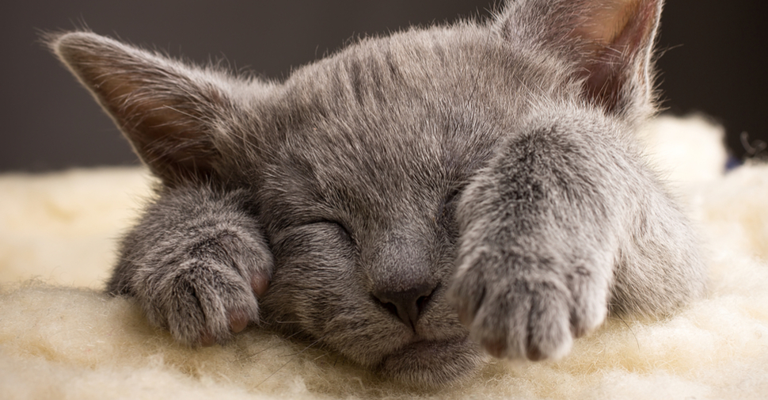
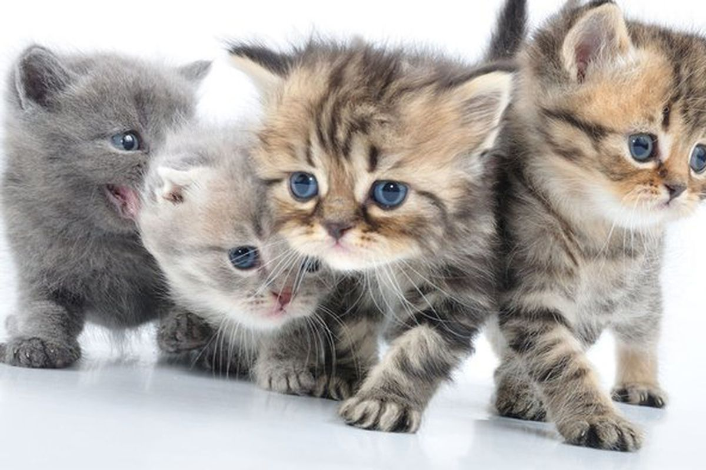
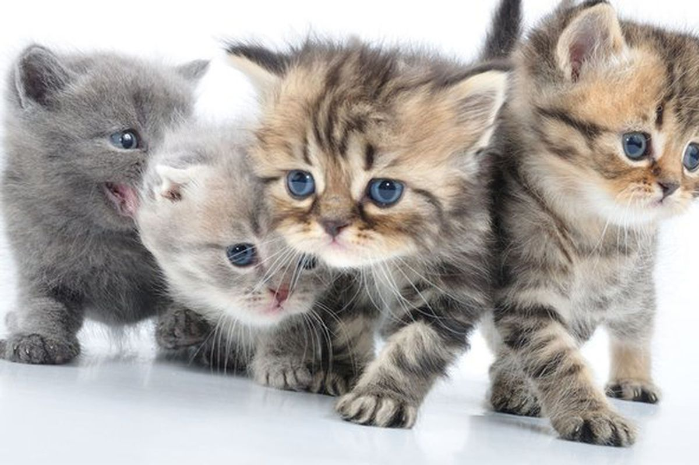

PAGES ABOUT CATS
What actually is a cat?
The cat (Felis catus, syn. Felis silvestris catus, literally "woodland cat"), often referred to as the domestic cat to distinguish it from big cats such as tigers, lions, and other felids and felines, is a small furry, carnivorous mammal. It is called a house cat when it is tame and kept as a pet, and a feral cat when it is living wild. It is often valued by humans for companionship and for its ability to hunt vermin. More than seventy cat breeds are recognized by various cat registries. Cats are similar in anatomy to the other felids, with a strong flexible body, quick reflexes, sharp teeth and retractable claws adapted to killing small prey. They are predators who are most active at dawn and dusk. Cats can hear sounds too faint or too high in frequency for human ears, such as those made by mice and other small animals. Compared to humans, they see better in the dark (they see in near total darkness) and have a better sense of smell, but poorer color vision. Cats, despite being solitary hunters, are a social species. Cat communication includes the use of vocalizations including mewing, purring, trilling, hissing, growling and grunting as well as cat-specific body language; they also communicate with their own species by secreting and perceiving pheromones.
Cats have a high breeding rate. Under controlled breeding, they can be bred and shown as registered pedigree pets, a hobby known as cat fancy. Failure to control the breeding of pet cats by spaying and neutering, as well as the abandonment of former household pets, has resulted in large numbers of feral cats worldwide, requiring population control.[10] Feral cats have contributed to the extinction of many bird species.
Because cats were venerated in ancient Egypt, they were commonly believed to have been domesticated there, but there may have been instances of domestication as early as the Neolithic from around 9,500 years ago (7500 BC). Domestic cats descended from the Near Eastern wildcat and diverged around 8000 BC in the Middle East. The leopard cat was domesticated independently in China around 5500 BC, though this line of partially domesticated cats leaves no trace in the domesticated populations of today.
As of 2007, cats were the second-most popular pet in the U.S. by number of pets owned, after freshwater fish. As of 2010, they were ranked the third-most popular pet in the UK, after fish and dogs, with around 8 million being owned
Photos
  
